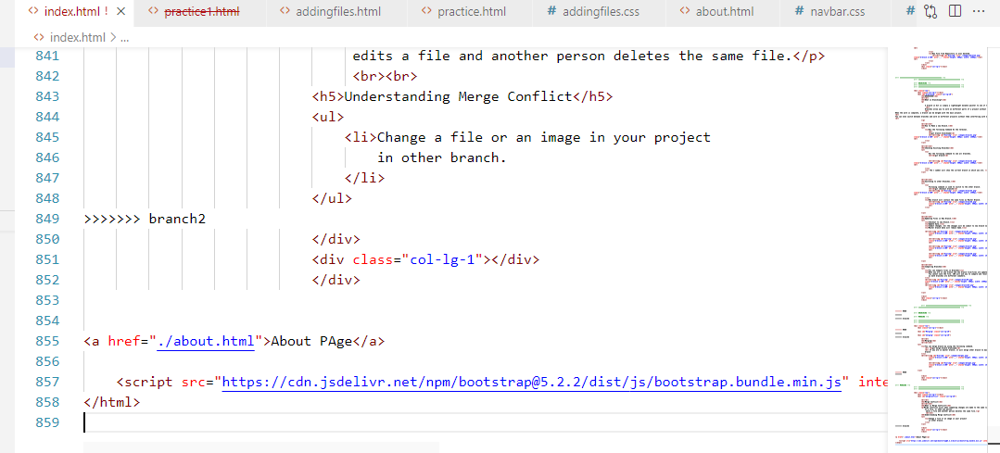

GIT AND GITHUB

What is Git?
-
Git is a version control system.
Git helps you keep track of code changes.
Git is used to collaborate on code.
What is GITHUB?
- GitHub is a code hosting platform for version control and collaboration. It lets you and others work together on projects from anywhere. This tutorial teaches you GitHub essentials like repositories, branches, commits, and pull requests.
- GitHub is an increasingly popular programming resource used for code sharing. It's a social networking site for programmers that many companies and organizations use to facilitate project management and collaboration.
CONTENTS THAT YOU LEARN
- How To Make GITHUB Account What are Repositories?
- Making Live Wepage on GitHUB.
- Cloning Repository
- How to initializa , add, commit and cehck status of files.
- Setting Remote URL and pushing Files to github.
- Deleting file/folder.
- Renaming a file/folder.
- Branching
- Merging
- Merge Conflict
- Pull From Github.
- Fork Repository
- Edit Files From Github Account

MAKING GITHUB ACCOUNT
- Got github.com github
- Click on sign up.
- Enter Credentials needed.
- Your Account will be created.

What are Repositories?
- A GitHub repository can be used to store a development project.
- It can contain folders and any type of files (HTML, CSS, JavaScript, Documents, Data, Images).
- A GitHub repository should also include a licence file and a README file about the project.
- A GitHub repository can also be used to store ideas, or any resources that you want to share.
MAKING Public Repositories
- Click on your profile icon.
- Go to your Repositories.
- Click on create new.

- Click on create new.
- Make it public.
- Click on Create Reposiitory

Making Private Reposiitory
- Create a new repository on your git hub Accout.
- Choose it as Private Repository.
- Click on button create repository.
- Now Open Project folder in either GitBash terminal or VScode terminal
- Add Configuration Information. Commands are listed below:
- git config --global user.name “Aliza Tariq”
- git config –global user.email username@gmail.com
- To view config Information.
git config –global –list
- Initialize the Repository by the following command.
git initBy this Command .git folder will be created which is a hidden folder and you can see by changing the settings.
Command to all folders/files including hidden. ls -lart
- To view status
git status - To push Local repository in remote repository add/set remote url.
git remote add origin https://github.com/aliza-tariq/MC-A1-GitHub-WebPage.git
Copy the url
Git remote
Git remote -v
-
SSH AND GPG KEYS Deploy
Pushing in private repository
When we try to push it will give an error because it is a private repository and git will not give such type of information about private one.
What are SSH Keys?
SSH is a secure shell network protocol that is used for network management, remote file transfer, and remote system access. Using the SSH protocol, you can connect and authenticate to remote servers and services. With SSH keys, you can connect to GitHub without supplying your username and personal access token at each visit. You can also use an SSH key to sign commits.
- SSH uses a pair of SSH keys to establish an authenticated and encrypted secure network protocol. It allows for secure remote communication on unsecured open networks.
- SSH keys are used to initiate a secure "handshake". When generating a set of keys, you will generate a "public" and "private" key.
- The "public" key is the one you share with the remote party. Think of this more as the lock.
- The "private" key is the one you keep for yourself in a secure place. Think of this as the key to the lock.
- SSH keys are generated through a security algorithm. It is all very complicated, but it uses prime numbers, and large random numbers to make the public and private key.
- It is created so that the public key can be derived from the private key, but not the other way around.
So deploy SSH key to get Read Write accces in private repository.
Go to Add new SSH key From Git HuB Docs Foe more detail
Go to generate new SSH key
- Now assign process ID to agent key.
eval "$(ssh-agent -s)"

- Now add SSH-key to SSH agent.
Command :ssh-add ~/.ssh/id_ed25519

Deploy SSH Key on Git Hub Account.
- Now switch to SSH url from your repository and copy it. and set remote url.

- Now add file, commit and then push to the repository.
Command:
git add index.html
git commit -m "Adding HTML"
git push -u origin master


Now copy the command
ssh-keygen -t ed25519 -C "your_email@example.com"

Paste this command on terminal.
If your SSH key already exist it’s you can overwrite it. It’s up to you.
Copy Public key Contents to github Account
cat ~/.ssh/id_ed25519.pub

Copy the cat contents.
Go To setthing.

Go to SSH and GPG Keys.

Add new SSH Key

After Entering the password The SSH key will be shown
Steps To Make a Private Repository Public.
-
Go to the repo settings.

-
Scroll down till ‘Danger Zone’. Make it public by changing the visibility.
Cloning a Reposity
What does it means?
Cloning a repository pulls down a full copy of all the repository data that GitHub.com has at that point in time, including all versions of every file and folder for the project. You can push your changes to the remote repository on GitHub.com, or pull other people's changes from GitHub.com.
Command : git clone url
Steps To Clone a Reposiitory
- Go to any Public Reposiitory.
- Copy the url.
- Run the command on your terminal. If you don't want to clone with the same name
youn can clone with a different name you want.

- Now Repository folder will shown in your folder.

- Create a file "practice1.html."
- Add some HTML code.
- First Initialize the Reposiitory.
Command
git init
- After this command .git Folder will be created which is hidden folder. You can this folder by changing settings.
-
On terminal you can view all hidden folders using following command :
ls -lart
- You can check the git status by uisng the following command :
git status
- Initially the file will be an untracked file.
- When we add the file it will go to the stagged area.
- We add the file/directories by using two methods
- By using name
Commmand : git add practice.html - By using . symbol to add all files/folders
Command : git add . or git add --all - By using * symbol to add files based on the extensions
Command : git add *.html

- By using name
- You can commit the file s in two ways:
- Commits with a one-line message
git commit -m "Message". -
It pens the default editor to type a long message
git commit
- Commits with a one-line message
Creating File
Initializing Repository
Checking Git Status.
Adding Files.
Commitng the files.
Setting Remote URL
- Set the remote url where your code will push.
- That URL could be your repository on GitHub, or another user's fork, or even on a completely different server.
- Command : git remote add origin REMOTE_URL
- For public repository URL will be the HTTPS URL.
- In case of private repository URL will be the SSH URL.
-
If you are pushing for the first time specify branch
where you want to push.
It you want to push in master branch.
Command : git push -u origin master -
The following command will push to previous specified branch.
git push

Pushing To Repository
Deleting file/folder from repository.
-
Use the following command to delate a file from repository
git rm practice.html
- This command delete the file from your disk folder but not
from the remote one.
-
To delete the file from the remote
repository commit the changes.
- Now File from Repository is alos deleted.
git mv sourcefilename destinationfilename
BRANCHING
What is Branching?
A branch in Git is simply a lightweight movable pointer to one of these commits. The default
branch name in Git is master . As you start making commits, you're given a master branch that
points to the last commit you made. Every time you commit, the master branch pointer moves
forward automatically.
Branches allow you to work on different parts of a project without impacting the main branch.
When the work is complete, a branch can be merged with the main project.
You can even switch between branches and work on different projects without them interfering
with each other.
How to Make a new Branch.
- Run the following Command On the terminal.
git branch branchname
Checking Existing Branches
-
Run the following command to see all branches.
git branch
- The * symbol will show the current branch in which you are.
Switching to other Branches.
-
Following command is used to switch to the other branch.
git checkout branch2
- New branch will contain the same files as Master Branch.
Updating Files in New Branch.
- Checkout to new Branch.
- Update Data.
- Commit changes. All the changes will be commit to new branch not master branch.
- Master branch data will remain Same.
Comparing Branches
- Yoc can Compare files in Branches
- When you are in new branch and new branch file/files are updated. You cannot save the file. IDE will ask you to compare and resolve it. as both branches are different somwhere.
Deleting a branch
- To delete a branch use the following command.
Git branch –d branchname
Merging
- You can merge branch by using the following command.
git merge branch brancname
If you are in master branch, it will merge other branch to master branch
Merge Conflict
What is Merge Conflict?
Merge conflicts occur when competing changes are made to the same line of a file, or when one person edits a file and another person deletes the same file.
Understanding Merge Conflict
- Change a file or an image in your project in other branch.
- Overwrite the changes.
- Commit it.
- Now switch to master branch
- Merge with branch 2.
- Merging failed because there is a conflict between files index.html and new image is added.
- Check git status.
- This confirms there is a conflict in index.html, but the image files are ready and staged to
be committed.
So we need to fix that conflict. Open the Editor -
Now we can stage index.html and check the status
Git add index.html
Git status
- The conflict has been fixed, and we can use commit to conclude the merge



Pull From Github.
Use following command to pull
git pull pull3
What is mean to FORK?
A fork is a copy of a repository. This is useful when you want to contribute to someone else's
project or start your own project based on theirs.
fork is not a command in Git, but something offered in GitHub and other repository hosts.
Login to your account.
Go to some repository
Click on Fork
Then create a new fork
Edit Files From Github Account.
- Go to your Repository
- Click on the file which you want to edit <> Select edit this file
- After editing commit the changes or create a new branch for this changes to commit.
Github Live Pages
Following are the steps :
- Go to project settings.
- Go to pages
- Select the main branch
And save it
After few minutes link will be available where your page is live or deploy.